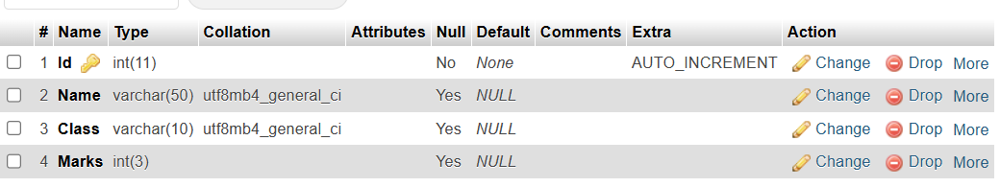
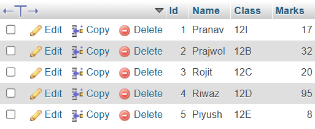
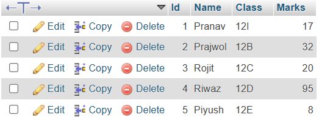
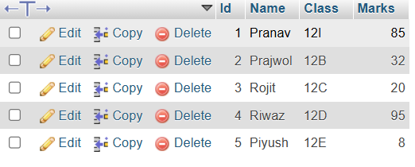
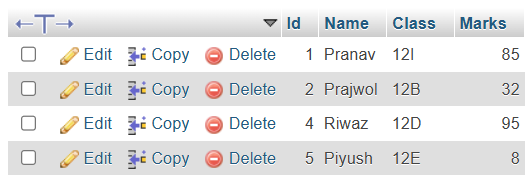

1. What is Database and DBMS?
A database is a structured collection of data. A DBMS (Database Management System) is software that manages databases and provides an interface to interact with them.
Advantages:
- Reduces redundancy
- Improves consistency
- Provides backup and recovery
- Ensures data security
Disadvantages:
- High cost
- Complexity
- Requires skilled personnel
2. Difference Between File System and DBMS
- Data Redundancy: High in file system, low in DBMS
- Data Integrity: Not enforced in file system, maintained in DBMS
- Security: Weak in file system, strong in DBMS
- Data Access: Manual in file system, query-based in DBMS
3. Models of DBMS
Hierarchical Model: Tree-like structure. Easy navigation, but rigid.
Network Model: Graph-based. Flexible relationships, but complex.
Relational Model: Table-based. Easy to use, widely used, but slower for complex relationships.
Object-Oriented Model: Integrates object principles. Ideal for complex data but not widely supported.
4. What is a Relational Database?
A relational database stores data in tables (relations) and uses keys to link them. Unlike hierarchical or network models, it provides flexibility and ease of querying using SQL.
5. What is Data Redundancy?
Redundancy means unnecessary repetition of data. DBMS minimizes it by normalizing data and linking tables through keys.
6. Centralized vs Distributed Database
- Location: Centralized in one place vs distributed across network
- Cost: Centralized is cheaper
- Failure: Centralized risks total failure; distributed has higher reliability
- Scalability: Limited in centralized, better in distributed
7. Who is DBA? Responsibilities of DBA
DBA (Database Administrator) is responsible for managing and maintaining a database.
- Install and upgrade DBMS
- Design database schema
- Backup and recovery
- Manage security and performance
8. Normalization with 1NF, 2NF, 3NF Examples
1NF: Remove repeating groups. Each cell holds a single value.
Table:
ID | Name | Phone
1 | Ram | 9811, 9841
→ 1NF:
ID | Name | Phone
1 | Ram | 9811
1 | Ram | 9841
2NF: Remove partial dependency (non-key attribute depending on part of composite key).
3NF: Remove transitive dependency (non-key depending on another non-key).
9. Keys with Examples
- Primary Key: Uniquely identifies a record. Example: Student ID
- Foreign Key: Refers to primary key of another table. Example: CourseID in Enrollment
- Candidate Key: All potential keys. Example: Email or ID could be candidate keys
10. What is SQL?
SQL (Structured Query Language) is used to communicate with databases. It includes:
- DDL: CREATE, ALTER, DROP
- DML: SELECT, INSERT, UPDATE, DELETE
- DCL: GRANT, REVOKE
- TCL: COMMIT, ROLLBACK
11. SQL Commands
a. CREATE TABLE students (
Id INT PRIMARY KEY,
Name VARCHAR(50),
Class VARCHAR(10),
Marks INT
);

b. INSERT INTO students VALUES
(1, 'Pranav', '12I', 17),
(2, '{Prajwol', '12B', 32),
(3, 'Rojit', '12C', 20);
(4, 'Riwaz', '12D', 95 );
(5, 'Piyush', '12E', 8);

c. SELECT * FROM students;

d. UPDATE students SET Marks = 85 WHERE Name = 'Pranav';

e. DELETE FROM students WHERE Id = 3;

12. Definitions
- Data Dictionary: Metadata about structure of database
- Primary Key: Unique identifier for a record
- Relationship: Link between tables through keys
- DML: Data Manipulation Language (SELECT, INSERT, etc.)
- SQL: Standard language for accessing databases
- Data Integrity: Accuracy and consistency of data
- DDL: Data Definition Language (CREATE, ALTER, etc.)
- Data Security: Measures to protect data from threats
- Database System: A system to manage and interact with databases via software like DBMS